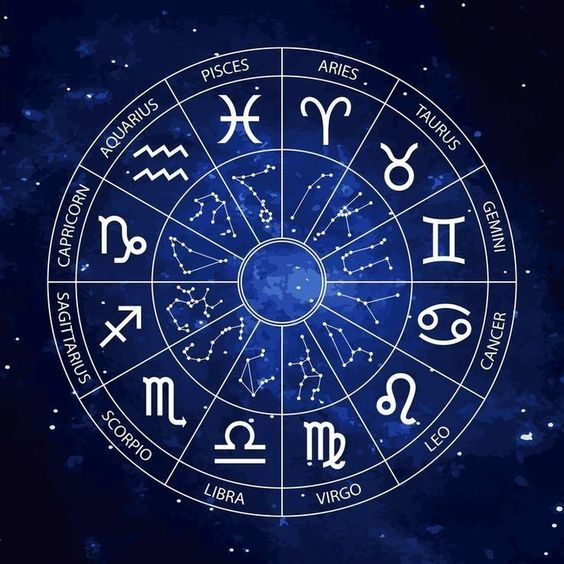

Vedic Astrology · ज्योतिष
수천 년의 인도 고대 지혜로 당신의 별자리를 읽고, 삶의 방향을 밝혀드립니다.
출생 차트 계산하기출생 시간과 장소를 입력하면 당신만의 베다 출생 차트를 계산합니다.
당신의 라시(Moon Sign)를 선택하세요
자아, 영혼, 아버지, 권위를 상징합니다. 라시 차트에서 라그나 다음으로 중요한 행성입니다.
마음, 어머니, 감정, 직관을 지배합니다. 달의 위치(라시)가 일상 운세의 기준이 됩니다.
에너지, 용기, 형제, 부동산을 상징합니다. 망갈 도샤는 결혼 적합성 판단에 중요합니다.
지성, 의사소통, 사업, 기술을 지배합니다. 부다의 위치는 학업과 언어 능력을 나타냅니다.
지혜, 행운, 자녀, 종교의 행성입니다. 베다 점성술에서 가장 길상한 행성으로 여겨집니다.
사랑, 아름다움, 예술, 물질적 쾌락을 상징합니다. 결혼과 로맨스의 카라카(지시자)입니다.
자아, 외모, 성격, 건강의 집. 상승궁(Ascendant)이 위치하는 가장 중요한 하우스입니다.
재산, 가족, 언어, 음식의 집. 물질적 부와 가정환경을 나타냅니다.
어머니, 고향, 부동산, 행복의 집. 내면의 평화와 가정 환경을 지배합니다.
배우자, 파트너십, 결혼의 집. 관계와 공식적인 파트너를 나타냅니다.
직업, 경력, 명성, 행동의 집. 사회적 지위와 삶의 목적을 보여줍니다.
해탈, 영적 성장, 외국, 손실의 집. 전생 카르마와 영적 해방을 상징합니다.
달이 하루에 약 13도씩 이동하는 27개의 달 궁(lunar mansion)입니다. 각 나크샤트라는 고유한 에너지와 신성을 가집니다.
첫 번째 나크샤트라. 신속함, 치유, 시작을 상징합니다. 지배 신: 아쉬윈 쌍둥이 신.
네 번째 나크샤트라. 풍요, 아름다움, 창의성의 나크샤트라. 달이 가장 편안함을 느끼는 위치입니다.
여섯 번째 나크샤트라. 폭풍, 변화, 파괴 후 재생을 상징. 지배 신: 루드라(시바).
가장 길상한 나크샤트라 중 하나. 양육, 풍요, 영적 성장. 중요 행사에 최적의 시간.
빔쇼타리 다샤 시스템은 출생 시 달의 나크샤트라를 기준으로 120년 주기의 행성 기간을 계산합니다.
베다 점성술의 핵심 시간 예측 시스템. 9개 행성이 120년 주기로 각각의 기간을 지배합니다.
태양이 지배하는 6년 기간. 자아 발견, 권위, 아버지와의 관계, 건강이 중심 주제.
달이 지배하는 10년 기간. 감정, 어머니, 직관, 대중과의 관계가 중요해집니다.
목성이 지배하는 16년 기간. 가장 길상한 다샤 중 하나. 지혜, 성장, 영적 발전의 시기.
토성이 지배하는 19년 기간. 카르마 정산의 시간. 인내와 규율을 통한 성장이 요구됩니다.
각 마하 다샤(주요 기간) 안에는 9개의 안타르 다샤(부기간)가 존재하며 더 세밀한 예측이 가능합니다.